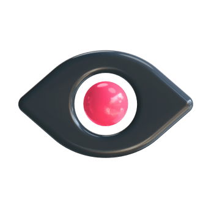

<!--#set var="title" value="Digital Agency - Комплексные решения" -->
<!--#set var="phone-number" value="<div class='phone-number phone-dark'><a href='tel: +79009587658'><span>+7 900 958-76-58</span></a></div>" -->
<!--#set var="btn" value="<button class='btn btn-black'>Заказать звонок</button>" -->
<!--#set var="iconMenu" value="<div class='menu__icon menu__icon--border-light'></div>" -->
<!--#set var="headerLogo" value="" -->
<!--#include virtual="/parts/header.html" -->

<main class="content seo-page">


	<section class="seo-main-block">
		<div class="container__text">
			<div class="seo-main-block__content">
				<!--#set var="h4Text" value="Seo продвижение" -->
				<!--#set var="h1Text" value="Выведи свой сайт в ТОП" -->
				<!--#set var="pText" value="Эффективные SEO-стратегии помогут вам стать лидером поисковой выдачи, обогнать конкурентов и увеличить продажи с сайта" -->
				<!--#set var="mainBlockBtn1" value="<button class='btn btn-pink'>Оставить заявку</button>" -->
				<!--#set var="mainBlockBtn2" value="<button class='btn btn-opacity'>Посмотреть кейсы</button>" -->
				<!--#include virtual="/parts/main-block.html" -->
			</div>
			<div data-aos="fade-up">
				<div class="black-elips-small"></div>
			</div>
			<div class="pink-elips-small"></div>
			<div class="pink-elips-medium"></div>
		</div>
		<!-- /.container -->

	</section>
	<!-- /.seo-main-block -->

	<div class="crm-mini-banner-1 mini-banner-black-bg">
		<!--#set var="miniBannerTextP" value="Также можем сделать SEO-аудит вашего сайта" -->
		<!--#set var="miniBannerBtn" value="<a href='#' class='btn btn-pink'>Получить бесплатно</a>" -->
		<!--#include virtual="/parts/mini-banner.html" -->
	</div>
	<!-- /.target-mini-banner-1 -->

	<section class="list-components-wrap">
		<div class="container__text">
			<!--#set var="h2ListComp" value="<h2 class='h2-48'>Преимущества CRM системы</h2>" -->

			<!--#set var="imgListCompPoint1" value="" -->
			<!--#set var="h3ListCompPoint1" value="Единая база" -->
			<!--#set var="pListCompPoint1" value="Все контакты и данные заказчиков, контрагентов и клиентов хранятся в единой базе, с которой легко работать." -->
			<!--  -->
			<!--#set var="imgListCompPoint2" value="" -->
			<!--#set var="h3ListCompPoint2" value="Планирование" -->
			<!--#set var="pListCompPoint2" value="На основе аналитических данных можно прогнозировать дальнейшую прибыль компании и развитие бизнес-процессов." -->
			<!--  -->
			<!--#set var="imgListCompPoint3" value="" -->
			<!--#set var="h3ListCompPoint3" value="Быстрая аналитика" -->
			<!--#set var="pListCompPoint3" value="Система собирает собственную статистику, которая показывает движение заказов и все этапы сделок. Так вы сможете улучшить показатели компании." -->
			<!--  -->
			<!--#set var="imgListCompPoint4" value="" -->
			<!--#set var="h3ListCompPoint4" value="Прозрачный контроль" -->
			<!--#set var="pListCompPoint4" value="CRM позволяет в онлайн-режиме отслеживать работу отдела продаж, показывает все процессы работы с клиентом" -->
			<!--  -->
			<!--#include virtual="/parts/list-components.html" -->
		</div>
		<!-- /.container -->
	</section>
	<!-- /.list-components-wrap -->

	<div class="crm-mini-banner-2 mini-banner-blue-bg">
		<!--#set var="miniBannerTextP" value="Ознакомься с кейсами команды" -->
		<!--#set var="miniBannerBtn" value="<a href='#' class='btn btn-black'>Посмотреть портфолио</a>" -->
		<!--#include virtual="/parts/mini-banner.html" -->
	</div>
	<!-- /.target-mini-banner -->

	<section class="quote-wrap">
		<!--#set var="h2Quote" value="CRM-система упрощает работу с клиентами и позволяет увеличить количество повторных продаж" -->
		<!--#include virtual="/parts/quote.html" -->
	</section>
	<!-- /.quote-wrap -->


	<!--#set var="faqControlP1" value="У меня b2b сектор, будет ли таргетированная реклама эффективна?" -->
	<!--#set var="faqContentP1" value="Найти можно почти любой сегмент. По данным Mediascope за 2018 год, около 23 млн человек пользуются «ВКонтакте», около 15 млн — Instagram, по 9 млн — Facebook и «Одноклассниками». Объем аудитории социальных сетей растет каждый год. Около 60% населения России заходят в соцсети ежедневно. Также не стоит верить распространенным мифам в духе «во “ВКонтакте” сидят только подростки», «В “Одноклассниках” только пенсионеры»  и т. д. Все зависит от конкретной ниши и сложности задачи. Хоть на одной из площадок, как правило, можно найти вашу ЦА." -->
	<!--#set var="faqControlP2" value="Что делать, если я до конца не знаю свою ЦА?" -->
	<!--#set var="faqContentP2" value="Найти можно почти любой сегмент. По данным Mediascope за 2018 год, около 23 млн человек пользуются «ВКонтакте», около 15 млн — Instagram, по 9 млн — Facebook и «Одноклассниками». Объем аудитории социальных сетей растет каждый год. Около 60% населения России заходят в соцсети ежедневно. Также не стоит верить распространенным мифам в духе «во “ВКонтакте” сидят только подростки», «В “Одноклассниках” только пенсионеры»  и т. д. Все зависит от конкретной ниши и сложности задачи. Хоть на одной из площадок, как правило, можно найти вашу ЦА." -->
	<!--#set var="faqControlP3" value="Что делать, если я до конца не знаю свою ЦА?" -->
	<!--#set var="faqContentP3" value="Найти можно почти любой сегмент. По данным Mediascope за 2018 год, около 23 млн человек пользуются «ВКонтакте», около 15 млн — Instagram, по 9 млн — Facebook и «Одноклассниками». Объем аудитории социальных сетей растет каждый год. Около 60% населения России заходят в соцсети ежедневно. Также не стоит верить распространенным мифам в духе «во “ВКонтакте” сидят только подростки», «В “Одноклассниках” только пенсионеры»  и т. д. Все зависит от конкретной ниши и сложности задачи. Хоть на одной из площадок, как правило, можно найти вашу ЦА." -->
	<!--#set var="faqControlP4" value="У меня b2b сектор, будет ли таргетированная реклама эффективна?" -->
	<!--#set var="faqContentP4" value="Найти можно почти любой сегмент. По данным Mediascope за 2018 год, около 23 млн человек пользуются «ВКонтакте», около 15 млн — Instagram, по 9 млн — Facebook и «Одноклассниками». Объем аудитории социальных сетей растет каждый год. Около 60% населения России заходят в соцсети ежедневно. Также не стоит верить распространенным мифам в духе «во “ВКонтакте” сидят только подростки», «В “Одноклассниках” только пенсионеры»  и т. д. Все зависит от конкретной ниши и сложности задачи. Хоть на одной из площадок, как правило, можно найти вашу ЦА." -->
	<!--#set var="faqControlP5" value="Чем таргет лучше контекста? Я лучше в контекст 100 тысяч занесу и получу 200 тысяч." -->
	<!--#set var="faqContentP5" value="Найти можно почти любой сегмент. По данным Mediascope за 2018 год, около 23 млн человек пользуются «ВКонтакте», около 15 млн — Instagram, по 9 млн — Facebook и «Одноклассниками». Объем аудитории социальных сетей растет каждый год. Около 60% населения России заходят в соцсети ежедневно. Также не стоит верить распространенным мифам в духе «во “ВКонтакте” сидят только подростки», «В “Одноклассниках” только пенсионеры»  и т. д. Все зависит от конкретной ниши и сложности задачи. Хоть на одной из площадок, как правило, можно найти вашу ЦА." -->
	<!--#set var="faqControlP6" value="Какие показатели ЦА нужно знать для эффективной рекламы?" -->
	<!--#set var="faqContentP6" value="Найти можно почти любой сегмент. По данным Mediascope за 2018 год, около 23 млн человек пользуются «ВКонтакте», около 15 млн — Instagram, по 9 млн — Facebook и «Одноклассниками». Объем аудитории социальных сетей растет каждый год. Около 60% населения России заходят в соцсети ежедневно. Также не стоит верить распространенным мифам в духе «во “ВКонтакте” сидят только подростки», «В “Одноклассниках” только пенсионеры»  и т. д. Все зависит от конкретной ниши и сложности задачи. Хоть на одной из площадок, как правило, можно найти вашу ЦА." -->
	<!--#include virtual="/parts/faq.html" -->


	<section class="main-page-request">
		<!--#set var="imgLCube3" value="" -->
		<!--#set var="imgLCube4" value="" -->
		<!--#set var="imgLCube4copy" value="" -->
		<!--#set var="imgLFormRight" value="" -->
		<!--#include virtual="/parts/form.html" -->
	</section>
	<!-- /.main-page-request -->

</main>

<!--#include virtual="/parts/footer.html" -->